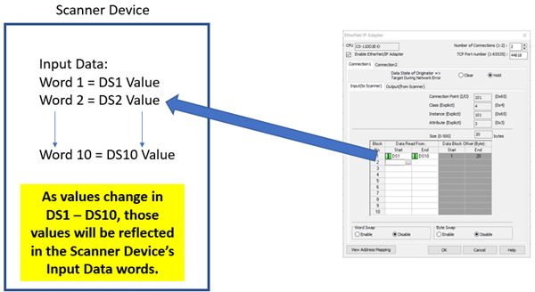
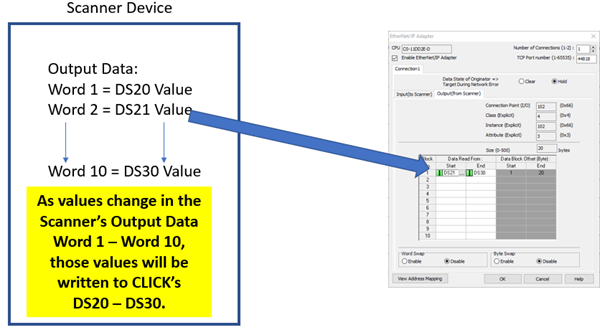
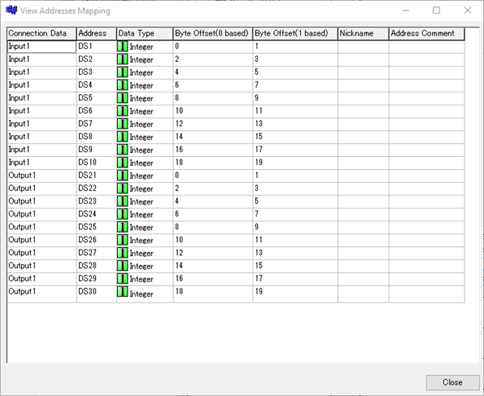

Topic: CL233

| CLICK EtherNet/IP Adapter Setup |
Topic: CL233
|
Configure the CLICK EtherNet/IP Adapter setup by going to the Function tab in the Navigation pane or under the Setup menu. Expand the Com Port1 Setup to access the EtherNet/IP Adapter:


1Enable EtherNet/IP Adapter: The PLC will not respond to EtherNet/IP Messages unless this option is selected. When selected, the PLC will respond to EtherNet/IP messages targeted at the TCP Port number configured in option c shown above. The default port number is 44818.
2Number of Connections: The CLICK PLC supports 2 EtherNet/IP connections. The default configuration is for 1 connection. To enable 2 connections, change this option to 2 and an additional Connection tab will appear for configuration.
3TCP Port number (1 – 65535): This is the TCP Port number that CLICK will listen to for EtherNet/IP connections. The range is from 1 – 65535 as indicated above. 44818 is the default port number for EtherNet/IP.
4TCP Timeout (5 – 5000): When doing Explicit Messaging to the CLICK PLC, this is the time without activity that CLICK will wait before closing the TCP connection (FIN). To prevent the CLICK PLC from closing the TCP connection, the master (Scanner) should be configured to send messages more frequently than the time specified in this field.
5Data State of Originator => Target During Network Error: This option determines what the CLICK PLC does to the data specified in the Output (from Scanner) tab in the event of loss of communications from the Scanner. This is the data being written from the Scanner device. The Hold option will leave the data values in the last state that was written from the Scanner. The Clear option will set all the address values to 0 in the event of communications loss. This is configured per Connection. This feature is designed for Class 1 Implicit Connections. For use with Class 3 Explicit Connections please look at using SD108/SD114 “_EIP_Con_No_Comm_Time.
6Input Communication Parameters: These values are not editable, but this is the information necessary for configuration of the Scanner device connection. There are different values for each Connection 1 and 2 and for each segment, Input and Output.
For IO (Implicit) Messaging, the Connection Points are:
| Connection | Segment | Connection Point |
| Connection 1 | Input | 101 (0x65) |
| Connection 1 | Output | 102 (0x66) |
| Connection 2 | Input | 103 (0x67) |
| Connection 2 | Output | 104 (0x68) |
For Explicit Messaging, the Object Class, Object Instance and Object Attribute are:
| Connection | Segment | Object Class | Object Instance | Object Attribute |
| Connection 1 | Input | 4 | 101 (0x65) | 3 |
| Connection 1 | Output | 4 | 102 (0x66) | 3 |
| Connection 2 | Input | 4 | 103 (0x67) | 3 |
| Connection 2 | Output | 4 | 104 (0x68) | 3 |
7Size (0 – 500): This field displays the size for each connection and segment in bytes. This is an important value for configuring the Scanner device connection. This value is not editable but is calculated based upon the addresses mapped in the table below it.
8Address blocks: For Input Data, this is the CLICK address range where data being sent back to the Scanner will originate from. For Output Data, this is the CLICK address range where the data being sent from the Scanner will be written.


Up to 10 different data blocks may be specified. Memory addresses may be typed in manually or you can click on the Address Picker box to select the available addresses. The addresses allowed are:
|
- DS |
- SD |
|
- DD |
- TD |
|
- DF |
- TXT |
|
- DH |
- XD |
|
- CTD |
- YD |
|
|
Note: TXT addresses must be specified in an even amount. Odd byte configurations are not allowed. |
|
9 Data Block Offset: This field will display the start and end byte offsets for each data block specified. Note that the EtherNet/IP protocol handles data in bytes therefore many EtherNet/IP Scanner devices may only support Input and Output data in this same format.
10Word Swap: This field will change the word order of 32-bit data types (DD, DF, XD, YD, TD, CTD and SD) being received or sent from the Scanner device. See the “Byte Swap” explanation for an illustration of the data for the various options.
11Byte Swap: This field will change the byte order within the words for all data types. In the illustration below, each letter represents a Byte.
If data is shown in 32-bit register via Data View of the CLICK software as: ABCD
What is sent on the wire:
- No Byte or Word Swap: DCBA
- Byte Swap only: CDAB
- Word Swap only: BADC
- Byte and Word Swap: ABCD

|
Note: Word Swap and Byte Swap are configured separately for each Connection, 1 and 2 and for each segment, Input and Output. |
|
12View Address Mapping: The View Address Mapping button will display a more detailed breakdown of each PLC address to its corresponding Byte Offset within the EtherNet/IP data for both connections input and output data. An example is displayed below.

13Export EDS File: This button can be pressed upon completion of the Adapter configuration to produce an EDS file that can be imported into the EtherNet/IP Scanner’s programming software with the required settings for connection.
|
|
Note: If the number of Connections is greater than 1, Data blocks must be configured in both connections in order to export the EDS file. If there are no Data Blocks configured, a GUI-102 error will result. |
|
CLICK Example for AB CompactLogix